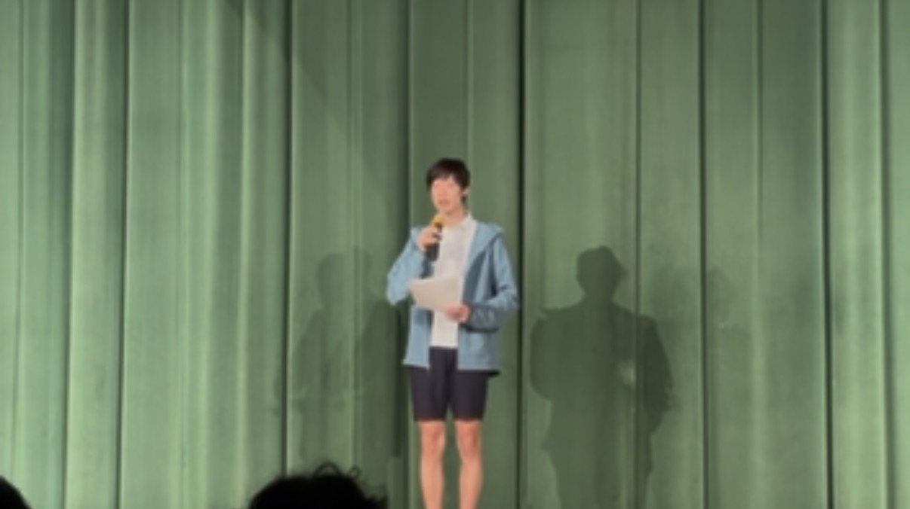
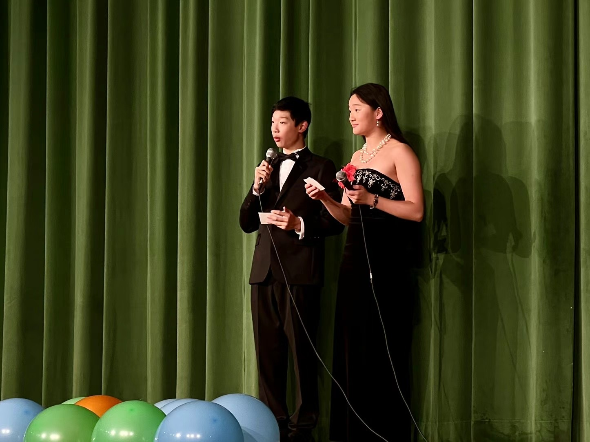

Up in front of a room
I’ve slowly realized that a lot of the things I enjoy are the same skill wearing different costumes: standing in front of people and getting something across. A proof, a pitch, a card trick — the underlying problem is identical, which is to make the room actually care.
One version is competitive. In DECA I present business cases to a panel of judges on the clock, and I’ve done alright at it — a state champion and a two-time international qualifier. It taught me how to think on my feet: build an argument fast, read the room, and sound sure of myself even when I’m half-improvising the next sentence.
The version I care about most is teaching. Somewhere between tutoring AP Calculus, TA-ing math at our Chinese school, and running Math Club, I had to actually learn how to talk — how to take something that’s obvious to me and make it land for someone it isn’t obvious to yet. That turns out to be harder than the math itself. Lately I’ve been chasing the same thing on my YouTube channel, @orz67, where I explain ideas with animation and can’t fall back on a whiteboard and some hand-waving.

Then there’s the pure-fun version: hosting. I’ve MC’d our Chinese school’s gala, worked a microphone for a whole evening’s program, and on any given day I’ll corner just about anyone to show them something I can’t stop thinking about.


The one nobody expects is card tricks. Magic is presentation stripped down to its cleanest form — the entire trick is controlling what the audience notices, and when. Most of mine are really a math argument in disguise, a little parity or modular arithmetic, but nobody watching needs to know that. When it works, the reveal lands the way a good proof does: you never saw it coming, and then it’s obvious.
Underneath all of it is the same small thrill — the moment a room shifts because you finally got something across. Pitch, lecture, or sleight of hand, that’s the part I’m actually chasing.